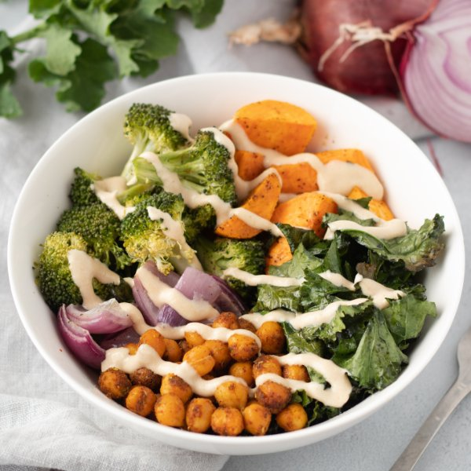

Sweet Potato Chickpea Bowls with Maple-Tahini Sauce

Prep Time
35 min
Nutrition (per serving)
699.2 kcalCalories
21.5 gProtein
89.7 gCarbs
32.5 gFat
Full nutrition table
| Calories | 699.2 kcal |
| Total fat | 32.5 g |
| Saturated fat | 4.3 g |
| Trans fat | 0 g |
| Cholesterol | 0 mg |
| Sodium | 449.3 mg |
| Carbohydrates | 89.7 g |
| Fiber | 20.4 g |
| Sugars | 15.4 g |
| Protein | 21.5 g |
| Potassium | 1351.6 mg |
| Calcium | 355.8 mg |
| Iron | 8 mg |
| Vitamin A | 24722.4 IU |
| Vitamin C | 134.8 mg |
| Vitamin D | 0 IU |
Cookware
Ingredients
- 2 crownsbroccoli
- 2 (15 oz) cansgarbanzo beans (chickpeas)
- 1 bunchkale
- 1lemon
- 1 mediumred onion
- 1 ½ lbsweet potatoes
- black pepper
- chili powder
- cumin, ground
- extra virgin olive oil
- garlic powder
- oregano, dried
- pure maple syrup
- salt
- tahini
- turmeric, ground
Steps
- Preheat oven to 400°F.
- Wash and dry the fresh produce.1 ½ lb sweet potatoes
2 crowns broccoli
1 bunch kale
1 lemon - Peel the sweet potatoes and onions; cut both into 1-inch pieces. Transfer to a large bowl; add oil, salt, and pepper, and toss to coat. Divide veggies between two baking sheets and bake, until softened, about 10 minutes. Reserve bowl for later use.1 medium red onion
2 tsp extra virgin olive oil
1 tsp salt
½ tsp black pepper - Meanwhile, drain and rinse the chickpeas; set aside to drain further.2 (15 oz) cans garbanzo beans (chickpeas)
- Separate broccoli into bite-sized florets and cut stems into smaller pieces. Place broccoli in the large bowl, add oil, salt, and pepper, and toss to coat. Add to baking sheets with the sweet potatoes, tossing to combine; bake until cooked through, about 10 more minutes. Reserve bowl for later use.2 tsp extra virgin olive oil
½ tsp salt
⅛ tsp black pepper - Preheat a large skillet over medium-high heat.
- Combine spices in a small bowl.2 tsp cumin
2 tsp chili powder
1 tsp garlic powder
1 tsp oregano
1 tsp turmeric
½ tsp salt
½ tsp black pepper - When the skillet is hot, add oil and swirl to coat the bottom.4 tsp extra virgin olive oil
- Add chickpeas and spices to the skillet and toss to coat. Cook, stirring occasionally, until chickpeas are golden and fragrant, about 12 minutes. When done, set aside.
- Meanwhile, fold kale leaves in half lengthwise and slice off the stems. Chop or tear leaves into bite-sized pieces and transfer to the large bowl; add oil, salt, and pepper and toss to combine. Add to the baking sheets and cook until wilted, about 5 more minutes.2 tsp extra virgin olive oil
½ tsp salt
⅛ tsp black pepper - Juice lemon into a small bowl; add tahini, maple syrup, and water, whisking to combine the dressing. Add additional water as needed to reach a drizzling consistency.½ cup tahini
4 tsp pure maple syrup
¼ cup water - To serve, divide roasted vegetables and chickpeas between bowls. Drizzle with tahini-maple dressing and enjoy!